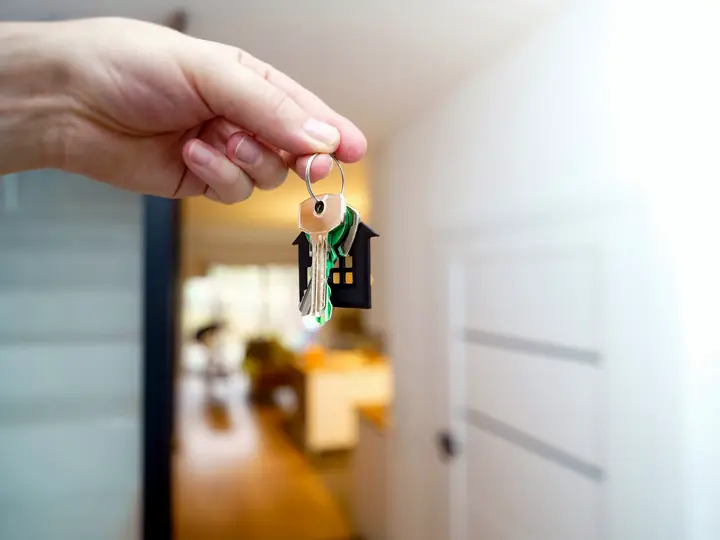

Keeping up with the economy takes hours
Inflation reports, jobs numbers and interest rate decisions arrive every month, spread across many different sources.
-
75% → 60%
More information, fewer investors
In a study of 647 retirement plans, 75% of employees signed up when their plan offered two funds. When it offered 59, about 60% did.
-
34%
Overwhelmed and unsure
Asked a basic question about spreading out investment risk, 34% of Americans answered “do not know.”
-
−3.8 pts
No one should need an economics degree to manage their own money
In a study of every trade in Taiwan from 1995 to 1999, individual investors lost 3.8 percentage points a year to trading, while institutions gained 1.5.
Sources: Sethi-Iyengar, Huberman and Jiang, 2004; Lusardi and Mitchell, 2014; Barber, Lee, Liu and Odean, 2009.

I kept missing the news during class
I'm Julian Sassoon, a junior in Georgia. I've spent six years learning how markets work and testing trading strategies. My problem was always time. Big economic reports come out during the school day, and by the time I could look, the market had already moved.
So I'm building an AI agent that reads the economic data for me. It pulls inflation, interest rate and jobs numbers straight from the Bureau of Labor Statistics and the Federal Reserve, decides what to trade, and explains why. I've already built a trading journal and a position-size calculator with Codex, and I've been experimenting with AI agents since Auto-GPT.
Understand the economic news in three steps
Download the free report guide
One page on the four reports that move the economy: what each one measures, who publishes it and when it comes out.
Check the AI's read when a report comes out
Each week I post what the AI read in the newest reports, what it traded on a paper account with no real money, and why. Paper results are hypothetical and can't predict future returns.
Know what the news means for your money
Spend a few minutes with each report, then decide what it means for your own investments.
Four reports the AI reads first
Each one comes straight from the agency that publishes it, by its series ID.
CUSR0000SA0
Consumer Price Index
How fast prices are rising, from groceries to rent.
CES0000000001
Payroll jobs
How many jobs employers added or cut last month.
LNS14000000
Unemployment rate
The share of people looking for work.

RIFSPFF_N.M
Federal funds rate
The rate that sets the cost of borrowing.
What changes when you understand the reports

When you trade on headlines
- Big reports come out at 8:30 in the morning, during school and work, and prices move before most people can read them.
- The households that traded the most earned 11.4% a year while the market returned 17.9%.
- The stocks Robinhood users bought most each day trailed the market by 4.7% over the next 20 trading days.
When you know what the reports say
- You know which four reports matter and when each one comes out.
- You can see how an AI reads each report and why it makes each paper trade.
- You decide what the news means for your own money in a few minutes.
I'm testing whether an AI that reads economic data can avoid these mistakes. The paper-trading results will show whether it does.
Sources: Barber and Odean, Journal of Finance, 2000; Barber, Huang, Odean and Schwarz, Journal of Finance, 2022.

Sources
- Sethi-Iyengar, Sheena, Gur Huberman and Wei Jiang. How Much Choice Is Too Much? Contributions to 401(k) Retirement Plans. In Pension Design and Structure, edited by Olivia S. Mitchell and Stephen P. Utkus. Oxford University Press, 2004.
- Lusardi, Annamaria, and Olivia S. Mitchell. The Economic Importance of Financial Literacy: Theory and Evidence. Journal of Economic Literature 52, no. 1 (2014): 5-44.
- Barber, Brad M., Yi-Tsung Lee, Yu-Jane Liu and Terrance Odean. Just How Much Do Individual Investors Lose by Trading? Review of Financial Studies 22, no. 2 (2009): 609-632.
- Barber, Brad M., and Terrance Odean. Trading Is Hazardous to Your Wealth: The Common Stock Investment Performance of Individual Investors. Journal of Finance 55, no. 2 (2000): 773-806.
- Barber, Brad M., Xing Huang, Terrance Odean and Christopher Schwarz. Attention-Induced Trading and Returns: Evidence from Robinhood Users. Journal of Finance 77, no. 6 (2022): 3141-3190.
Photos: Unsplash.